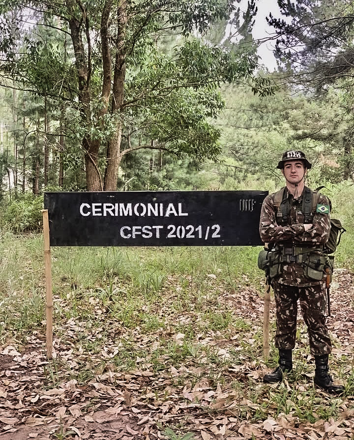
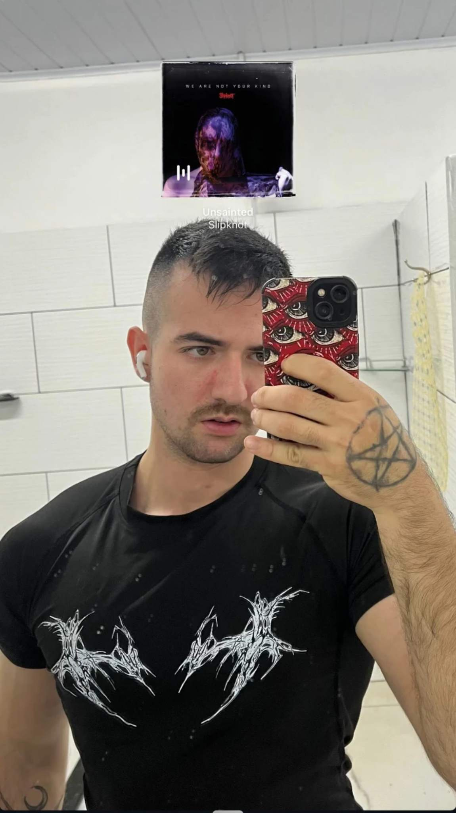
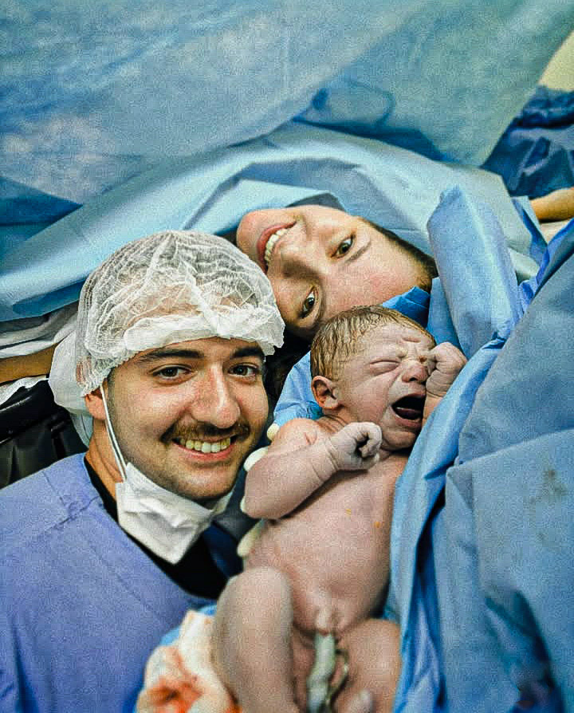

❝ 09 Tyler Durden.
O Sargenteante Azevedo atuou como Sargento instrutor durante o ano de 2024 na Base Administrativa da Guarnição de Santa Maria. Entretanto, Azevedo participou das diversas instruções com os recrutas do ano de 2024.
Azevedo foi o responsável por preparar o Campo de Treinamento para os recrutas do ano de 2024.
O Sargento Azevedo fez o Curso de Formação de Sargento Temporário (CFST).

A fotografia acima registra Azevedo no cerimonial de CFST que ocorreu em 2021/2.

Pedro tem gosto musical Rock/Metal e também possui uma habilidade de cantor... Não Tenho Medo De Agir.
Além de ser um 3º Sargento, Azevendo também faz jus ao novo e mais nobre título de "PAI".

Pedro com o seu filho recém nascido Samuel e sua esposa, Rafaella Rolim.
Fita 2 Lado A

Redes sociais:

Pedro Azevedo
pedro.gavriel
(Resctrict)
916 seguidores

Unknown